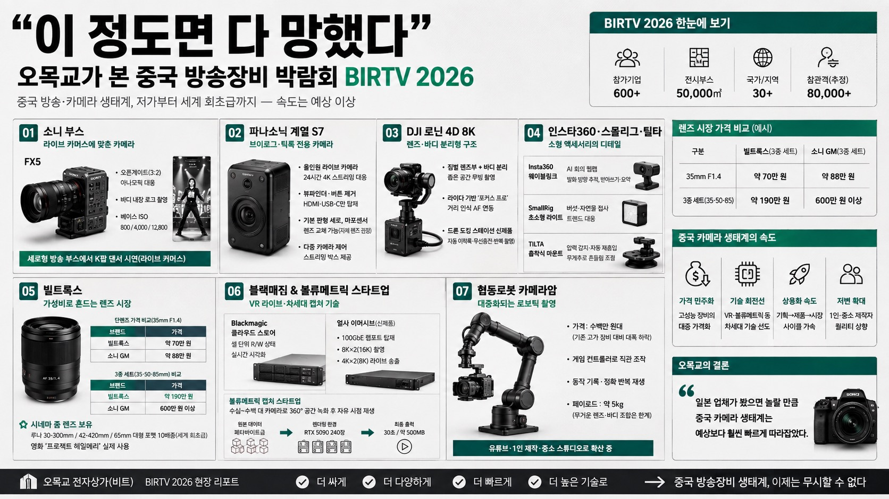

오목교 전자상가MORNING DIGEST · 2026-08-31 · 오목교 전자상가🎬 영상
"이 정도면 다 망했다" — 오목교가 본 중국 방송장비 박람회 BIRTV 2026
오목교 전자상가(비트)가 중국 방송·카메라 전시회 BIRTV 2026 현장을 돌며, 소니·DJI 같은 글로벌 브랜드부터 빌트록스·블랙매직·정체불명의 볼류메트릭 스타트업까지 쏟아진 신기술을 소개한다. 결론은 "일본 업체가 봤으면 놀랄 만큼" 중국 카메라 생태계가 빠르게 따라잡고 있다는 것.

01소니 부스 — 라이브 커머스에 맞춘 카메라
FX5: 오픈게이트(3:2 원판을 자르지 않고 그대로 수신)로 아나모픽 렌즈 대응, 바디 내장 로그 촬영, 베이스 ISO를 800·4,000·12,800 세 단계로 갖춰 저조도 대응력 강조.
세로형 방송 전용 부스에서는 K팝 댄서를 세로 프레임으로 촬영하며 '시네마틱 라이브 방송(라이브 커머스)'을 시연 — 중국 라이브 커머스 시장 성장에 맞춘 포지셔닝.
02파나소닉 계열 S7 — 브이로그·틱톡 전용 카메라
미러리스급 바디를 알루미늄으로 만들어 24시간 4K 스트리밍 발열을 견디는 '올인원 라이브 카메라'. 뷰파인더·물리 버튼 없이 HDMI·USB-C 단자만 남기고, 기본 판형이 세로.
마이크로포서드 센서로 렌즈 교체는 가능하지만 제조사는 자체 개발 렌즈(오토포커스 특화) 사용을 권장. 여러 대를 묶어 라이브 송출을 제어하는 스트리밍 박스도 함께 판매.
03DJI 로닌 4D 8K — 렌즈·바디 분리형 구조
짐벌이 달린 렌즈부와 바디가 케이블로 분리돼, 좁은 차량 내부에서도 무빙 촬영이 가능. 라이다로 피사체 거리를 인식해 자동 포커스를 연동하는 '포커스 프로' 시스템 탑재.
드론 도킹 스테이션 신제품도 전시 — 정해진 시간에 자동 이착륙·무선충전하며 같은 경로를 반복 촬영해 건설현장 등의 타임랩스 기록에 활용 가능.
04인스타360·스몰리그·틸타 — 소형 액세서리의 디테일
인스타360 웨이블링크: 사무실 화상회의용 웹캠. 대화 소리가 나는 방향으로 카메라가 자동으로 돌아가며, AI로 발화 내용을 받아쓰기·요약까지 지원.
스몰리그: 버섯·자연물 접사 촬영 트렌드(북미·유럽)를 겨냥한 초소형 라이트 출시.
틸타: 차량 부착용 흡착식 짐벌 마운트 — 압력이 떨어지면 자동으로 공기를 재흡입해 흡착력을 유지, 무게추 추가로 흔들림 감쇠 정도 조절 가능.
05빌트록스 — 가성비로 흔드는 렌즈 시장
35mm F1.4 단렌즈가 소니 GM 동급(약 88만 원) 대비 절반 이하인 약 70만 원. 35·50·85mm 세트를 맞춰도 약 190만 원(소니 GM 세트는 600만 원 이상)으로 훨씬 저렴.
저가 라인만이 아니라 시네마 줌렌즈(루나 30-300mm T값, 42-420mm T값 등)도 보유 — 특히 65mm 대형 포맷을 커버하는 열배줌 시네마렌즈는 세계 최초급 스펙이며, 영화 '프로젝트 헤일메리' 촬영에도 실제 사용됐다고 소개.
06블랙매직 & 볼류메트릭 캡처 스타트업
블랙매직 클라우드 스토어는 셀 단위 읽기/쓰기 상태를 실시간 시각화하는 스토리지 장비, 얼사 이머시브(VR 라이브용)는 기존 10GbE 대신 100GbE 램포트를 달아 8K×2(총 16K) 촬영·4K×2(총 8K) 라이브 송출을 지원.
이름을 알 수 없는 볼류메트릭 캡처 업체는 수십~수백 대 카메라로 360도 공간을 녹화해 촬영 후 원하는 위치·각도로 자유롭게 재생하는 기술을 시연. 촬영 원본은 페타바이트급이지만 RTX 5090 240장으로 렌더링해 최종 출력은 30초 기준 약 500MB로 압축.
07협동로봇 카메라암 — 대중화되는 로보틱 촬영
원래 영화·광고에서나 쓰던 고가의 로보틱 카메라 무브먼트가 협동로봇 대중화로 가격이 수백만 원대까지 내려와, 유튜브 제작 현장까지 확산 중.
게임 컨트롤러로 직관적으로 조작하고, 촬영 동작을 기록해 정확히 반복 재생할 수 있어 초보자도 쉽게 활용 가능. 다만 페이로드가 5kg 수준이라 무거운 렌즈·바디 조합에는 한계.
08시사점
저가 렌즈부터 세계 최초급 시네마 줌렌즈, VR 라이브 송출 장비, 볼류메트릭 캡처까지 저변과 최첨단을 동시에 밀어붙이는 중국 카메라 생태계의 속도가 예상보다 훨씬 빠르다.
협동로봇 카메라암처럼 원래 초고가였던 촬영 기술이 빠르게 대중 가격대로 내려오는 흐름은, 향후 1인 크리에이터·중소 제작사의 촬영 퀄리티 상향으로 이어질 가능성이 크다.